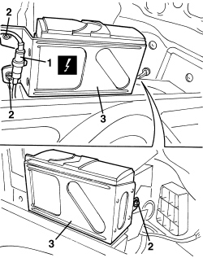
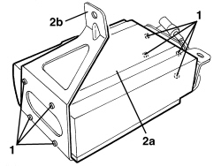

5570T85 CD/AUDIO PLAYER/LOADER - R.R.
- Path
- Procedures > 55 ELECTRICAL EQUIPMENT > 5570 ACCESSORIES > 5570T CAR RADIO/CAR TELEPHONE/VIDEO > 5570T85 CD/AUDIO PLAYER/LOADER - R.R.
- Kind
- repair procedure (removal / refitting; the operation number is the code)
- Applies to
- all engines; all production periods
- Interactive page
- https://sloeber94.github.io/elrnDB-aBrrSpdr/en/#/946004549
Applies to: all engines; all production periods
 Removing
Removing
 Refitting
Refitting- For Spider.
Op. 7040B20 BACK TRIM FOR LUGGAGE COMPARTMENT/LOAD PLATFORM - ARRANGE
- For Spider.
Op. 7040B10 LOAD PLATFORM (LUGGAGE PLATFORM) TRIM - R+R
- Work on the right side
Op. 7040B22 LUGGAGE COMPARTMENT/LOAD PLATFORM MOULDING - R+R
Op. 7040B18 LOAD COMPARTMENT LOAD PLATFORM SIDE TRIM ONE LH OR RH - R.R
1. Detach the electrical connection.
Description | Connector | |
|---|---|---|
1 | CD PLAYER/CHANGER |
2. Unscrew the nuts.
3. Remove the CD changer complete with brackets.

Applies to: all engines; all production periods
1. If necessary, undo the screws.
2. Separate CD changer (2a) from bracket (2b).

Applies to: all engines; all production periods
Refitting
Removing- Check that the CD changer is not damaged.
- Secure the CD changer to the bracket with the screws.
- Position the CD changer complete with brackets.
- Tighten the nuts.
- Attach the electrical connection.
Op. 7040B18 LOAD COMPARTMENT LOAD PLATFORM SIDE TRIM ONE LH OR RH - R.R
Op. 7040B22 LUGGAGE COMPARTMENT/LOAD PLATFORM MOULDING - R+R
Op. 7040B10 LOAD PLATFORM (LUGGAGE PLATFORM) TRIM - R+R
Op. 7040B20 BACK TRIM FOR LUGGAGE COMPARTMENT/LOAD PLATFORM - ARRANGE
- Check that the system is working.
Topics linked from this page (5)
- 7040B10 LOAD PLATFORM (LUGGAGE PLATFORM) TRIM - R+R
- 7040B18 LOAD COMPARTMENT LOAD PLATFORM SIDE TRIM ONE LH OR RH - R.R
- 7040B20 BACK TRIM FOR LUGGAGE COMPARTMENT/LOAD PLATFORM - ARRANGE
- 7040B22 LUGGAGE COMPARTMENT/LOAD PLATFORM MOULDING - R+R
- P075 CD PLAYER/CHANGER